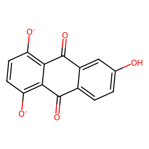
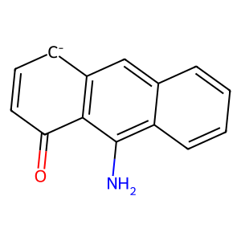
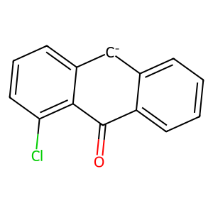

| Reactant | Reactant SMILES |
Product | Product SMILES |
ElementaryStepName | Reaction Energy |
| [O-]c1ccc([O-])cc1 | | O=c1cc[cH-]cc1 | Disproportionation step1 | |
 | [O-]c1ccc([O-])c2ccccc12 |  | O=c1cc[cH-]c2ccccc12 | Disproportionation step1 | |
| O=C1C=CC(=O)c2c([O-])ccc([O-])c21 | | O=C1C=CC(=O)c2c1[cH-]ccc2=O | Disproportionation step1 | |
 | [O-]c1c2ccccc2c([O-])c2ccccc12 |  | O=c1c2ccccc2[cH-]c2ccccc12 | Disproportionation step1 | |
 | [O-]c1ccc([O-])c2cc3ccccc3cc12 |  | O=c1cc[cH-]c2cc3ccccc3cc12 | Disproportionation step1 | |
 | O=C1C=CC(=O)c2cc3c([O-])ccc([O-])c3cc21 |  | O=C1C=CC(=O)c2cc3c(=O)cc[cH-]c3cc21 | Disproportionation step1 | |
| O=C1c2ccccc2C(=O)c2c([O-])ccc([O-])c21 |  | O=C1c2ccccc2C(=O)c2c1[cH-]ccc2=O | Disproportionation step1 | |
| O=C1C=CC(=O)c2c1c([O-])c1ccccc1c2[O-] |  | O=C1C=CC(=O)c2c1[cH-]c1ccccc1c2=O | Disproportionation step1 | |
| O=S(=O)(O)c1cc([O-])ccc1[O-] | | O=c1cc[cH-]c(S(=O)(=O)O)c1 | Disproportionation step1 | |
 | O=S(=O)(O)c1cc([O-])ccc1[O-] | | O=c1cc[cH-]cc1S(=O)(=O)O | Disproportionation step1 | |
 | O=S(=O)(O)c1cccc2c([O-])ccc([O-])c12 |  | O=c1cc[cH-]c2c(S(=O)(=O)O)cccc12 | Disproportionation step1 | |
 | O=S(=O)(O)c1cccc2c([O-])ccc([O-])c12 | | O=c1cc[cH-]c2cccc(S(=O)(=O)O)c12 | Disproportionation step1 | |
 | O=S(=O)(O)c1ccc2c([O-])ccc([O-])c2c1 | | O=c1cc[cH-]c2cc(S(=O)(=O)O)ccc12 | Disproportionation step1 | |
 | O=S(=O)(O)c1ccc2c([O-])ccc([O-])c2c1 |  | O=c1cc[cH-]c2ccc(S(=O)(=O)O)cc12 | Disproportionation step1 | |
 | O=S(=O)(O)c1cc([O-])c2ccccc2c1[O-] | | O=c1cc(S(=O)(=O)O)[cH-]c2ccccc12 | Disproportionation step1 | |
 | O=S(=O)(O)c1cc([O-])c2ccccc2c1[O-] | | O=c1c(S(=O)(=O)O)c[cH-]c2ccccc12 | Disproportionation step1 | |
 | O=C1C=CC(=O)c2c([O-])c(S(=O)(=O)O)cc([O-])c21 | | O=C1C=CC(=O)c2c1[cH-]c(S(=O)(=O)O)cc2=O | Disproportionation step1 | |
 | O=C1C=CC(=O)c2c([O-])c(S(=O)(=O)O)cc([O-])c21 |  | O=C1C=CC(=O)c2c1[cH-]cc(S(=O)(=O)O)c2=O | Disproportionation step1 | |
 | O=C1C=C(S(=O)(=O)O)C(=O)c2c([O-])ccc([O-])c21 |  | O=C1C=C(S(=O)(=O)O)C(=O)c2c1[cH-]ccc2=O | Disproportionation step1 | |
| O=C1C=C(S(=O)(=O)O)C(=O)c2c([O-])ccc([O-])c21 |  | O=C1C(S(=O)(=O)O)=CC(=O)c2c1[cH-]ccc2=O | Disproportionation step1 | |
| O=S(=O)(O)c1cccc2c([O-])c3ccccc3c([O-])c12 |  | O=c1c2ccccc2[cH-]c2cccc(S(=O)(=O)O)c12 | Disproportionation step1 | |
 | O=S(=O)(O)c1cccc2c([O-])c3ccccc3c([O-])c12 |  | O=c1c2ccccc2[cH-]c2c(S(=O)(=O)O)cccc12 | Disproportionation step1 | |
 | O=S(=O)(O)c1ccc2c([O-])c3ccccc3c([O-])c2c1 |  | O=c1c2ccccc2[cH-]c2ccc(S(=O)(=O)O)cc12 | Disproportionation step1 | |
 | O=S(=O)(O)c1ccc2c([O-])c3ccccc3c([O-])c2c1 | | O=c1c2ccccc2[cH-]c2cc(S(=O)(=O)O)ccc12 | Disproportionation step1 | |
 | O=S(=O)(O)c1c2ccccc2cc2c([O-])ccc([O-])c12 |  | O=c1cc[cH-]c2c(S(=O)(=O)O)c3ccccc3cc12 | Disproportionation step1 | |
| O=S(=O)(O)c1c2ccccc2cc2c([O-])ccc([O-])c12 |  | O=c1cc[cH-]c2cc3ccccc3c(S(=O)(=O)O)c12 | Disproportionation step1 | |
 | O=S(=O)(O)c1cccc2cc3c([O-])ccc([O-])c3cc12 |  | O=c1cc[cH-]c2cc3c(S(=O)(=O)O)cccc3cc12 | Disproportionation step1 | |
 | O=S(=O)(O)c1cccc2cc3c([O-])ccc([O-])c3cc12 | | O=c1cc[cH-]c2cc3cccc(S(=O)(=O)O)c3cc12 | Disproportionation step1 | |
| O=S(=O)(O)c1ccc2cc3c([O-])ccc([O-])c3cc2c1 | | O=c1cc[cH-]c2cc3cc(S(=O)(=O)O)ccc3cc12 | Disproportionation step1 | |
 | O=S(=O)(O)c1ccc2cc3c([O-])ccc([O-])c3cc2c1 |  | O=c1cc[cH-]c2cc3ccc(S(=O)(=O)O)cc3cc12 | Disproportionation step1 | |
 | O=S(=O)(O)c1cc([O-])c2cc3ccccc3cc2c1[O-] |  | O=c1c(S(=O)(=O)O)c[cH-]c2cc3ccccc3cc12 | Disproportionation step1 | |
| O=S(=O)(O)c1cc([O-])c2cc3ccccc3cc2c1[O-] |  | O=c1cc(S(=O)(=O)O)[cH-]c2cc3ccccc3cc12 | Disproportionation step1 | |
 | O=C1C=CC(=O)c2c1c([O-])c1cccc(S(=O)(=O)O)c1c2[O-] | | O=C1C=CC(=O)c2c1[cH-]c1cccc(S(=O)(=O)O)c1c2=O | Disproportionation step1 | |
| O=C1C=CC(=O)c2c1c([O-])c1cccc(S(=O)(=O)O)c1c2[O-] | | O=C1C=CC(=O)c2c1[cH-]c1c(S(=O)(=O)O)cccc1c2=O | Disproportionation step1 | |
 | O=C1c2cccc(S(=O)(=O)O)c2C(=O)c2c([O-])ccc([O-])c21 | | O=C1c2[cH-]ccc(=O)c2C(=O)c2cccc(S(=O)(=O)O)c21 | Disproportionation step1 | |
| O=C1c2cccc(S(=O)(=O)O)c2C(=O)c2c([O-])ccc([O-])c21 | | O=C1c2cccc(S(=O)(=O)O)c2C(=O)c2c1[cH-]ccc2=O | Disproportionation step1 | |
 | O=C1C=CC(=O)c2c1c([O-])c1ccc(S(=O)(=O)O)cc1c2[O-] |  | O=C1C=CC(=O)c2c1[cH-]c1cc(S(=O)(=O)O)ccc1c2=O | Disproportionation step1 | |
 | O=C1C=CC(=O)c2c1c([O-])c1ccc(S(=O)(=O)O)cc1c2[O-] |  | O=C1C=CC(=O)c2c1[cH-]c1ccc(S(=O)(=O)O)cc1c2=O | Disproportionation step1 | |
 | O=C1c2ccc(S(=O)(=O)O)cc2C(=O)c2c([O-])ccc([O-])c21 |  | O=C1c2ccc(S(=O)(=O)O)cc2C(=O)c2c1[cH-]ccc2=O | Disproportionation step1 | |
| O=C1c2ccc(S(=O)(=O)O)cc2C(=O)c2c([O-])ccc([O-])c21 |  | O=C1c2cc(S(=O)(=O)O)ccc2C(=O)c2c1[cH-]ccc2=O | Disproportionation step1 | |
 | O=C1C=C(S(=O)(=O)O)C(=O)c2c1c([O-])c1ccccc1c2[O-] |  | O=C1C=C(S(=O)(=O)O)C(=O)c2c1[cH-]c1ccccc1c2=O | Disproportionation step1 | |
 | O=C1C=C(S(=O)(=O)O)C(=O)c2c1c([O-])c1ccccc1c2[O-] |  | O=C1C(S(=O)(=O)O)=CC(=O)c2c1[cH-]c1ccccc1c2=O | Disproportionation step1 | |
 | O=C1c2ccccc2C(=O)c2c([O-])c(S(=O)(=O)O)cc([O-])c21 |  | O=C1c2ccccc2C(=O)c2c1[cH-]c(S(=O)(=O)O)cc2=O | Disproportionation step1 | |
| O=C1c2ccccc2C(=O)c2c([O-])c(S(=O)(=O)O)cc([O-])c21 | | O=C1c2ccccc2C(=O)c2c1[cH-]cc(S(=O)(=O)O)c2=O | Disproportionation step1 | |
| O=C1C=CC(=O)c2c1cc1c([O-])ccc([O-])c1c2S(=O)(=O)O |  | O=C1C=CC(=O)c2c1cc1c(=O)cc[cH-]c1c2S(=O)(=O)O | Disproportionation step1 | |
 | O=C1C=CC(=O)c2c1cc1c([O-])ccc([O-])c1c2S(=O)(=O)O | | O=C1C=CC(=O)c2c1cc1[cH-]ccc(=O)c1c2S(=O)(=O)O | Disproportionation step1 | |
 | O=C1C=CC(=O)c2cc3c([O-])c(S(=O)(=O)O)cc([O-])c3cc21 | | O=C1C=CC(=O)c2cc3c(=O)cc(S(=O)(=O)O)[cH-]c3cc21 | Disproportionation step1 | |
| O=C1C=CC(=O)c2cc3c([O-])c(S(=O)(=O)O)cc([O-])c3cc21 |  | O=C1C=CC(=O)c2cc3c(=O)c(S(=O)(=O)O)c[cH-]c3cc21 | Disproportionation step1 | |
 | O=C1C=C(S(=O)(=O)O)C(=O)c2cc3c([O-])ccc([O-])c3cc21 |  | O=C1C=C(S(=O)(=O)O)C(=O)c2cc3[cH-]ccc(=O)c3cc21 | Disproportionation step1 | |
 | O=C1C=C(S(=O)(=O)O)C(=O)c2cc3c([O-])ccc([O-])c3cc21 |  | O=C1C=C(S(=O)(=O)O)C(=O)c2cc3c(=O)cc[cH-]c3cc21 | Disproportionation step1 | |
 | O=C(O)c1cc([O-])ccc1[O-] |  | O=C(O)c1c[cH-]ccc1=O | Disproportionation step1 | |
 | O=C(O)c1cc([O-])ccc1[O-] |  | O=C(O)c1cc(=O)cc[cH-]1 | Disproportionation step1 | |
 | O=C(O)c1cccc2c([O-])ccc([O-])c12 | | O=C(O)c1cccc2c(=O)cc[cH-]c12 | Disproportionation step1 | |
| O=C(O)c1cccc2c([O-])ccc([O-])c12 |  | O=C(O)c1cccc2[cH-]ccc(=O)c12 | Disproportionation step1 | |
| O=C(O)c1ccc2c([O-])ccc([O-])c2c1 | | O=C(O)c1ccc2[cH-]ccc(=O)c2c1 | Disproportionation step1 | |
 | O=C(O)c1ccc2c([O-])ccc([O-])c2c1 |  | O=C(O)c1ccc2c(=O)cc[cH-]c2c1 | Disproportionation step1 | |
| O=C(O)c1cc([O-])c2ccccc2c1[O-] | | O=C(O)c1cc(=O)c2ccccc2[cH-]1 | Disproportionation step1 | |
 | O=C(O)c1cc([O-])c2ccccc2c1[O-] | | O=C(O)c1c[cH-]c2ccccc2c1=O | Disproportionation step1 | |
 | O=C(O)c1cc([O-])c2c(c1[O-])C(=O)C=CC2=O | | O=C1C=CC(=O)c2c1[cH-]cc(C(=O)O)c2=O | Disproportionation step1 | |
| O=C(O)c1cc([O-])c2c(c1[O-])C(=O)C=CC2=O | | O=C(O)c1cc(=O)c2c([cH-]1)C(=O)C=CC2=O | Disproportionation step1 | |
| O=C(O)C1=CC(=O)c2c([O-])ccc([O-])c2C1=O | | O=C(O)C1=CC(=O)c2c([cH-]ccc2=O)C1=O | Disproportionation step1 | |
 | O=C(O)C1=CC(=O)c2c([O-])ccc([O-])c2C1=O |  | O=C(O)C1=CC(=O)c2[cH-]ccc(=O)c2C1=O | Disproportionation step1 | |
 | O=C(O)c1ccc2c([O-])c3ccccc3c([O-])c2c1 | | O=C(O)c1ccc2c(=O)c3ccccc3[cH-]c2c1 | Disproportionation step1 | |
| O=C(O)c1ccc2c([O-])c3ccccc3c([O-])c2c1 | | O=C(O)c1ccc2[cH-]c3ccccc3c(=O)c2c1 | Disproportionation step1 | |
 | O=C(O)c1cccc2c([O-])c3ccccc3c([O-])c12 |  | O=C(O)c1cccc2[cH-]c3ccccc3c(=O)c12 | Disproportionation step1 | |
 | O=C(O)c1cccc2c([O-])c3ccccc3c([O-])c12 |  | O=C(O)c1cccc2c(=O)c3ccccc3[cH-]c12 | Disproportionation step1 | |
| O=C(O)c1c2ccccc2cc2c([O-])ccc([O-])c12 | | O=C(O)c1c2ccccc2cc2c(=O)cc[cH-]c12 | Disproportionation step1 | |
 | O=C(O)c1c2ccccc2cc2c([O-])ccc([O-])c12 |  | O=C(O)c1c2ccccc2cc2[cH-]ccc(=O)c12 | Disproportionation step1 | |
| O=C(O)c1cccc2cc3c([O-])ccc([O-])c3cc12 | | O=C(O)c1cccc2cc3c(=O)cc[cH-]c3cc12 | Disproportionation step1 | |
 | O=C(O)c1cccc2cc3c([O-])ccc([O-])c3cc12 | | O=C(O)c1cccc2cc3[cH-]ccc(=O)c3cc12 | Disproportionation step1 | |
| O=C(O)c1ccc2cc3c([O-])ccc([O-])c3cc2c1 |  | O=C(O)c1ccc2cc3[cH-]ccc(=O)c3cc2c1 | Disproportionation step1 | |
 | O=C(O)c1ccc2cc3c([O-])ccc([O-])c3cc2c1 | | O=C(O)c1ccc2cc3c(=O)cc[cH-]c3cc2c1 | Disproportionation step1 | |
| O=C(O)c1cc([O-])c2cc3ccccc3cc2c1[O-] |  | O=C(O)c1cc(=O)c2cc3ccccc3cc2[cH-]1 | Disproportionation step1 | |
 | O=C(O)c1cc([O-])c2cc3ccccc3cc2c1[O-] | | O=C(O)c1c[cH-]c2cc3ccccc3cc2c1=O | Disproportionation step1 | |
 | O=C(O)c1cccc2c1C(=O)c1c([O-])ccc([O-])c1C2=O |  | O=C(O)c1cccc2c1C(=O)c1c([cH-]ccc1=O)C2=O | Disproportionation step1 | |
| O=C(O)c1cccc2c1C(=O)c1c([O-])ccc([O-])c1C2=O | | O=C(O)c1cccc2c1C(=O)c1[cH-]ccc(=O)c1C2=O | Disproportionation step1 | |
 | O=C1C=CC(=O)c2c1c([O-])c1cccc(C(=O)O)c1c2[O-] |  | O=C1C=CC(=O)c2c1[cH-]c1c(C(=O)O)cccc1c2=O | Disproportionation step1 | |
| O=C1C=CC(=O)c2c1c([O-])c1cccc(C(=O)O)c1c2[O-] |  | O=C1C=CC(=O)c2c1[cH-]c1cccc(C(=O)O)c1c2=O | Disproportionation step1 | |
 | O=C(O)c1ccc2c(c1)C(=O)c1c([O-])ccc([O-])c1C2=O |  | O=C(O)c1ccc2c(c1)C(=O)c1c([cH-]ccc1=O)C2=O | Disproportionation step1 | |
 | O=C(O)c1ccc2c(c1)C(=O)c1c([O-])ccc([O-])c1C2=O |  | O=C(O)c1ccc2c(c1)C(=O)c1[cH-]ccc(=O)c1C2=O | Disproportionation step1 | |
 | O=C(O)c1ccc2c([O-])c3c(c([O-])c2c1)C(=O)C=CC3=O | | O=C(O)c1ccc2[cH-]c3c(c(=O)c2c1)C(=O)C=CC3=O | Disproportionation step1 | |
| O=C(O)c1ccc2c([O-])c3c(c([O-])c2c1)C(=O)C=CC3=O | | O=C(O)c1ccc2c(=O)c3c([cH-]c2c1)C(=O)C=CC3=O | Disproportionation step1 | |
| O=C(O)c1cc([O-])c2c(c1[O-])C(=O)c1ccccc1C2=O | | O=C1c2ccccc2C(=O)c2c1[cH-]cc(C(=O)O)c2=O | Disproportionation step1 | |
 | O=C(O)c1cc([O-])c2c(c1[O-])C(=O)c1ccccc1C2=O | | O=C(O)c1cc(=O)c2c([cH-]1)C(=O)c1ccccc1C2=O | Disproportionation step1 | |
 | O=C(O)C1=CC(=O)c2c(c([O-])c3ccccc3c2[O-])C1=O |  | O=C(O)C1=CC(=O)c2[cH-]c3ccccc3c(=O)c2C1=O | Disproportionation step1 | |
| O=C(O)C1=CC(=O)c2c(c([O-])c3ccccc3c2[O-])C1=O |  | O=C(O)C1=CC(=O)c2c([cH-]c3ccccc3c2=O)C1=O | Disproportionation step1 | |
 | O=C1C=CC(=O)c2c1cc1c([O-])ccc([O-])c1c2C(=O)O | | O=C1C=CC(=O)c2c1cc1[cH-]ccc(=O)c1c2C(=O)O | Disproportionation step1 | |
| O=C1C=CC(=O)c2c1cc1c([O-])ccc([O-])c1c2C(=O)O |  | O=C1C=CC(=O)c2c1cc1c(=O)cc[cH-]c1c2C(=O)O | Disproportionation step1 | |
| O=C1C=CC(=O)c2cc3c([O-])c(C(=O)O)cc([O-])c3cc21 |  | O=C1C=CC(=O)c2cc3c(=O)c(C(=O)O)c[cH-]c3cc21 | Disproportionation step1 | |
 | O=C1C=CC(=O)c2cc3c([O-])c(C(=O)O)cc([O-])c3cc21 |  | O=C(O)c1cc(=O)c2cc3c(cc2[cH-]1)C(=O)C=CC3=O | Disproportionation step1 | |
 | O=C(O)C1=CC(=O)c2cc3c([O-])ccc([O-])c3cc2C1=O |  | O=C(O)C1=CC(=O)c2cc3c(=O)cc[cH-]c3cc2C1=O | Disproportionation step1 | |
 | O=C(O)C1=CC(=O)c2cc3c([O-])ccc([O-])c3cc2C1=O |  | O=C(O)C1=CC(=O)c2cc3[cH-]ccc(=O)c3cc2C1=O | Disproportionation step1 | |
 | [O-]c1ccc([O-])c(O)c1 |  | O=c1cc[cH-]c(O)c1 | Disproportionation step1 | |
| [O-]c1ccc([O-])c(O)c1 | | O=c1cc[cH-]cc1O | Disproportionation step1 | |
| [O-]c1ccc([O-])c2c(O)cccc12 | | O=c1cc[cH-]c2cccc(O)c12 | Disproportionation step1 | |
 | [O-]c1ccc([O-])c2c(O)cccc12 | | O=c1cc[cH-]c2c(O)cccc12 | Disproportionation step1 | |
 | [O-]c1ccc([O-])c2cc(O)ccc12 |  | O=c1cc[cH-]c2cc(O)ccc12 | Disproportionation step1 | |
| [O-]c1ccc([O-])c2cc(O)ccc12 | | O=c1cc[cH-]c2ccc(O)cc12 | Disproportionation step1 | |
 | [O-]c1cc(O)c([O-])c2ccccc12 |  | O=c1cc(O)[cH-]c2ccccc12 | Disproportionation step1 | |
| [O-]c1cc(O)c([O-])c2ccccc12 |  | O=c1c(O)c[cH-]c2ccccc12 | Disproportionation step1 | |
| O=C1C=CC(=O)c2c([O-])c(O)cc([O-])c21 | | O=C1C=CC(=O)c2c1[cH-]cc(O)c2=O | Disproportionation step1 | |
 | O=C1C=CC(=O)c2c([O-])c(O)cc([O-])c21 | | O=C1C=CC(=O)c2c1[cH-]c(O)cc2=O | Disproportionation step1 | |
| O=C1C=C(O)C(=O)c2c([O-])ccc([O-])c21 | | O=C1C=C(O)C(=O)c2c1[cH-]ccc2=O | Disproportionation step1 | |
 | O=C1C=C(O)C(=O)c2c([O-])ccc([O-])c21 |  | O=C1C(O)=CC(=O)c2c1[cH-]ccc2=O | Disproportionation step1 | |
 | [O-]c1c2ccccc2c([O-])c2cc(O)ccc12 | | O=c1c2ccccc2[cH-]c2ccc(O)cc12 | Disproportionation step1 | |
| [O-]c1c2ccccc2c([O-])c2cc(O)ccc12 | | O=c1c2ccccc2[cH-]c2cc(O)ccc12 | Disproportionation step1 | |
 | [O-]c1c2ccccc2c([O-])c2c(O)cccc12 | | O=c1c2ccccc2[cH-]c2c(O)cccc12 | Disproportionation step1 | |
| [O-]c1c2ccccc2c([O-])c2c(O)cccc12 | | O=c1c2ccccc2[cH-]c2cccc(O)c12 | Disproportionation step1 | |
 | [O-]c1ccc([O-])c2c(O)c3ccccc3cc12 | | O=c1cc[cH-]c2cc3ccccc3c(O)c12 | Disproportionation step1 | |
 | [O-]c1ccc([O-])c2c(O)c3ccccc3cc12 |  | O=c1cc[cH-]c2c(O)c3ccccc3cc12 | Disproportionation step1 | |
 | [O-]c1ccc([O-])c2cc3c(O)cccc3cc12 | | O=c1cc[cH-]c2cc3cccc(O)c3cc12 | Disproportionation step1 | |
| [O-]c1ccc([O-])c2cc3c(O)cccc3cc12 |  | O=c1cc[cH-]c2cc3c(O)cccc3cc12 | Disproportionation step1 | |
 | [O-]c1ccc([O-])c2cc3cc(O)ccc3cc12 | | O=c1cc[cH-]c2cc3ccc(O)cc3cc12 | Disproportionation step1 | |
 | [O-]c1ccc([O-])c2cc3cc(O)ccc3cc12 | | O=c1cc[cH-]c2cc3cc(O)ccc3cc12 | Disproportionation step1 | |
| [O-]c1cc(O)c([O-])c2cc3ccccc3cc12 |  | O=c1c(O)c[cH-]c2cc3ccccc3cc12 | Disproportionation step1 | |
 | [O-]c1cc(O)c([O-])c2cc3ccccc3cc12 | | O=c1cc(O)[cH-]c2cc3ccccc3cc12 | Disproportionation step1 | |
| O=C1c2cccc(O)c2C(=O)c2c([O-])ccc([O-])c21 |  | O=C1c2cccc(O)c2C(=O)c2c1[cH-]ccc2=O | Disproportionation step1 | |
 | O=C1c2cccc(O)c2C(=O)c2c([O-])ccc([O-])c21 |  | O=C1c2[cH-]ccc(=O)c2C(=O)c2cccc(O)c21 | Disproportionation step1 | |
 | O=C1C=CC(=O)c2c1c([O-])c1cccc(O)c1c2[O-] |  | O=C1C=CC(=O)c2c1[cH-]c1c(O)cccc1c2=O | Disproportionation step1 | |
 | O=C1C=CC(=O)c2c1c([O-])c1cccc(O)c1c2[O-] |  | O=C1C=CC(=O)c2c1[cH-]c1cccc(O)c1c2=O | Disproportionation step1 | |
 | O=C1c2ccc(O)cc2C(=O)c2c([O-])ccc([O-])c21 | | O=C1c2cc(O)ccc2C(=O)c2c1[cH-]ccc2=O | Disproportionation step1 | |
|  | O=C1c2ccc(O)cc2C(=O)c2c([O-])ccc([O-])c21 |  | O=C1c2ccc(O)cc2C(=O)c2c1[cH-]ccc2=O | Disproportionation step1 | |
 | O=C1C=CC(=O)c2c1c([O-])c1ccc(O)cc1c2[O-] |  | O=C1C=CC(=O)c2c1[cH-]c1ccc(O)cc1c2=O | Disproportionation step1 | |
| O=C1C=CC(=O)c2c1c([O-])c1ccc(O)cc1c2[O-] |  | O=C1C=CC(=O)c2c1[cH-]c1cc(O)ccc1c2=O | Disproportionation step1 | |
 | O=C1C=C(O)C(=O)c2c1c([O-])c1ccccc1c2[O-] | | O=C1C(O)=CC(=O)c2c1[cH-]c1ccccc1c2=O | Disproportionation step1 | |
 | O=C1C=C(O)C(=O)c2c1c([O-])c1ccccc1c2[O-] | | O=C1C=C(O)C(=O)c2c1[cH-]c1ccccc1c2=O | Disproportionation step1 | |
 | O=C1c2ccccc2C(=O)c2c([O-])c(O)cc([O-])c21 |  | O=C1c2ccccc2C(=O)c2c1[cH-]c(O)cc2=O | Disproportionation step1 | |
 | O=C1c2ccccc2C(=O)c2c([O-])c(O)cc([O-])c21 | | O=C1c2ccccc2C(=O)c2c1[cH-]cc(O)c2=O | Disproportionation step1 | |
 | O=C1C=CC(=O)c2c1cc1c([O-])ccc([O-])c1c2O | | O=C1C=CC(=O)c2c1cc1[cH-]ccc(=O)c1c2O | Disproportionation step1 | |
 | O=C1C=CC(=O)c2c1cc1c([O-])ccc([O-])c1c2O | | O=C1C=CC(=O)c2c1cc1c(=O)cc[cH-]c1c2O | Disproportionation step1 | |
 | O=C1C=CC(=O)c2cc3c([O-])c(O)cc([O-])c3cc21 |  | O=C1C=CC(=O)c2cc3c(=O)cc(O)[cH-]c3cc21 | Disproportionation step1 | |
 | O=C1C=CC(=O)c2cc3c([O-])c(O)cc([O-])c3cc21 | | O=C1C=CC(=O)c2cc3c(=O)c(O)c[cH-]c3cc21 | Disproportionation step1 | |
 | O=C1C=C(O)C(=O)c2cc3c([O-])ccc([O-])c3cc21 |  | O=C1C=C(O)C(=O)c2cc3[cH-]ccc(=O)c3cc21 | Disproportionation step1 | |
 | O=C1C=C(O)C(=O)c2cc3c([O-])ccc([O-])c3cc21 | | O=C1C=C(O)C(=O)c2cc3c(=O)cc[cH-]c3cc21 | Disproportionation step1 | |
 | Nc1cc([O-])ccc1[O-] | | Nc1cc(=O)cc[cH-]1 | Disproportionation step1 | |
| Nc1cc([O-])ccc1[O-] | | Nc1c[cH-]ccc1=O | Disproportionation step1 | |
 | Nc1cccc2c([O-])ccc([O-])c12 |  | Nc1cccc2[cH-]ccc(=O)c12 | Disproportionation step1 | |
 | Nc1cccc2c([O-])ccc([O-])c12 |  | Nc1cccc2c(=O)cc[cH-]c12 | Disproportionation step1 | |
 | Nc1ccc2c([O-])ccc([O-])c2c1 |  | Nc1ccc2c(=O)cc[cH-]c2c1 | Disproportionation step1 | |
| Nc1ccc2c([O-])ccc([O-])c2c1 |  | Nc1ccc2[cH-]ccc(=O)c2c1 | Disproportionation step1 | |
| Nc1cc([O-])c2ccccc2c1[O-] |  | Nc1c[cH-]c2ccccc2c1=O | Disproportionation step1 | |
 | Nc1cc([O-])c2ccccc2c1[O-] | | Nc1cc(=O)c2ccccc2[cH-]1 | Disproportionation step1 | |
 | NC1=CC(=O)c2c([O-])ccc([O-])c2C1=O | | NC1=CC(=O)c2c([cH-]ccc2=O)C1=O | Disproportionation step1 | |
| NC1=CC(=O)c2c([O-])ccc([O-])c2C1=O | | NC1=CC(=O)c2[cH-]ccc(=O)c2C1=O | Disproportionation step1 | |
 | Nc1cc([O-])c2c(c1[O-])C(=O)C=CC2=O | | Nc1cc(=O)c2c([cH-]1)C(=O)C=CC2=O | Disproportionation step1 | |
| Nc1cc([O-])c2c(c1[O-])C(=O)C=CC2=O | | Nc1c[cH-]c2c(c1=O)C(=O)C=CC2=O | Disproportionation step1 | |
 | Nc1ccc2c([O-])c3ccccc3c([O-])c2c1 |  | Nc1ccc2[cH-]c3ccccc3c(=O)c2c1 | Disproportionation step1 | |
 | Nc1ccc2c([O-])c3ccccc3c([O-])c2c1 |  | Nc1ccc2c(=O)c3ccccc3[cH-]c2c1 | Disproportionation step1 | |
| Nc1cccc2c([O-])c3ccccc3c([O-])c12 |  | Nc1cccc2c(=O)c3ccccc3[cH-]c12 | Disproportionation step1 | |
 | Nc1cccc2c([O-])c3ccccc3c([O-])c12 |  | Nc1cccc2[cH-]c3ccccc3c(=O)c12 | Disproportionation step1 | |
 | Nc1c2ccccc2cc2c([O-])ccc([O-])c12 |  | Nc1c2ccccc2cc2c(=O)cc[cH-]c12 | Disproportionation step1 | |
 | Nc1c2ccccc2cc2c([O-])ccc([O-])c12 |  | Nc1c2ccccc2cc2[cH-]ccc(=O)c12 | Disproportionation step1 | |
 | Nc1cccc2cc3c([O-])ccc([O-])c3cc12 |  | Nc1cccc2cc3[cH-]ccc(=O)c3cc12 | Disproportionation step1 | |
| Nc1cccc2cc3c([O-])ccc([O-])c3cc12 | | Nc1cccc2cc3c(=O)cc[cH-]c3cc12 | Disproportionation step1 | |
 | Nc1ccc2cc3c([O-])ccc([O-])c3cc2c1 |  | Nc1ccc2cc3[cH-]ccc(=O)c3cc2c1 | Disproportionation step1 | |
 | Nc1ccc2cc3c([O-])ccc([O-])c3cc2c1 | | Nc1ccc2cc3c(=O)cc[cH-]c3cc2c1 | Disproportionation step1 | |
 | Nc1cc([O-])c2cc3ccccc3cc2c1[O-] | | Nc1c[cH-]c2cc3ccccc3cc2c1=O | Disproportionation step1 | |
| Nc1cc([O-])c2cc3ccccc3cc2c1[O-] | | Nc1cc(=O)c2cc3ccccc3cc2[cH-]1 | Disproportionation step1 | |
| Nc1cccc2c1C(=O)c1c([O-])ccc([O-])c1C2=O |  | Nc1cccc2c1C(=O)c1c([cH-]ccc1=O)C2=O | Disproportionation step1 | |
 | Nc1cccc2c1C(=O)c1c([O-])ccc([O-])c1C2=O |  | Nc1cccc2c1C(=O)c1[cH-]ccc(=O)c1C2=O | Disproportionation step1 | |
| Nc1cccc2c([O-])c3c(c([O-])c12)C(=O)C=CC3=O |  | Nc1cccc2c(=O)c3c([cH-]c12)C(=O)C=CC3=O | Disproportionation step1 | |
 | Nc1cccc2c([O-])c3c(c([O-])c12)C(=O)C=CC3=O |  | Nc1cccc2[cH-]c3c(c(=O)c12)C(=O)C=CC3=O | Disproportionation step1 | |
 | Nc1ccc2c(c1)C(=O)c1c([O-])ccc([O-])c1C2=O | | Nc1ccc2c(c1)C(=O)c1c([cH-]ccc1=O)C2=O | Disproportionation step1 | |
| Nc1ccc2c(c1)C(=O)c1c([O-])ccc([O-])c1C2=O | | Nc1ccc2c(c1)C(=O)c1[cH-]ccc(=O)c1C2=O | Disproportionation step1 | |
| Nc1ccc2c([O-])c3c(c([O-])c2c1)C(=O)C=CC3=O | | Nc1ccc2c(=O)c3c([cH-]c2c1)C(=O)C=CC3=O | Disproportionation step1 | |
 | Nc1ccc2c([O-])c3c(c([O-])c2c1)C(=O)C=CC3=O |  | Nc1ccc2[cH-]c3c(c(=O)c2c1)C(=O)C=CC3=O | Disproportionation step1 | |
 | Nc1cc([O-])c2c(c1[O-])C(=O)c1ccccc1C2=O |  | Nc1cc(=O)c2c([cH-]1)C(=O)c1ccccc1C2=O | Disproportionation step1 | |
| Nc1cc([O-])c2c(c1[O-])C(=O)c1ccccc1C2=O |  | Nc1c[cH-]c2c(c1=O)C(=O)c1ccccc1C2=O | Disproportionation step1 | |
 | NC1=CC(=O)c2c(c([O-])c3ccccc3c2[O-])C1=O | | NC1=CC(=O)c2[cH-]c3ccccc3c(=O)c2C1=O | Disproportionation step1 | |
| NC1=CC(=O)c2c(c([O-])c3ccccc3c2[O-])C1=O |  | NC1=CC(=O)c2c([cH-]c3ccccc3c2=O)C1=O | Disproportionation step1 | |
 | Nc1c2c(cc3c([O-])ccc([O-])c13)C(=O)C=CC2=O | | Nc1c2c(cc3c(=O)cc[cH-]c13)C(=O)C=CC2=O | Disproportionation step1 | |
| Nc1c2c(cc3c([O-])ccc([O-])c13)C(=O)C=CC2=O |  | Nc1c2c(cc3[cH-]ccc(=O)c13)C(=O)C=CC2=O | Disproportionation step1 | |
| NC1=CC(=O)c2cc3c([O-])ccc([O-])c3cc2C1=O | | NC1=CC(=O)c2cc3[cH-]ccc(=O)c3cc2C1=O | Disproportionation step1 | |
 | NC1=CC(=O)c2cc3c([O-])ccc([O-])c3cc2C1=O | | NC1=CC(=O)c2cc3c(=O)cc[cH-]c3cc2C1=O | Disproportionation step1 | |
| Nc1cc([O-])c2cc3c(cc2c1[O-])C(=O)C=CC3=O | | Nc1cc(=O)c2cc3c(cc2[cH-]1)C(=O)C=CC3=O | Disproportionation step1 | |
 | Nc1cc([O-])c2cc3c(cc2c1[O-])C(=O)C=CC3=O | | Nc1c[cH-]c2cc3c(cc2c1=O)C(=O)C=CC3=O | Disproportionation step1 | |
 | [O-]c1ccc([O-])c(Cl)c1 | | O=c1cc[cH-]cc1Cl | Disproportionation step1 | |
| [O-]c1ccc([O-])c(Cl)c1 |  | O=c1cc[cH-]c(Cl)c1 | Disproportionation step1 | |
| [O-]c1ccc([O-])c2c(Cl)cccc12 |  | O=c1cc[cH-]c2c(Cl)cccc12 | Disproportionation step1 | |
 | [O-]c1ccc([O-])c2c(Cl)cccc12 |  | O=c1cc[cH-]c2cccc(Cl)c12 | Disproportionation step1 | |
 | [O-]c1ccc([O-])c2cc(Cl)ccc12 | | O=c1cc[cH-]c2cc(Cl)ccc12 | Disproportionation step1 | |
| [O-]c1ccc([O-])c2cc(Cl)ccc12 |  | O=c1cc[cH-]c2ccc(Cl)cc12 | Disproportionation step1 | |
 | [O-]c1cc(Cl)c([O-])c2ccccc12 | | O=c1cc(Cl)[cH-]c2ccccc12 | Disproportionation step1 | |
| [O-]c1cc(Cl)c([O-])c2ccccc12 |  | O=c1c(Cl)c[cH-]c2ccccc12 | Disproportionation step1 | |
 | O=C1C=C(Cl)C(=O)c2c([O-])ccc([O-])c21 |  | O=C1C=C(Cl)C(=O)c2c1[cH-]ccc2=O | Disproportionation step1 | |
 | O=C1C=C(Cl)C(=O)c2c([O-])ccc([O-])c21 |  | O=C1C(Cl)=CC(=O)c2c1[cH-]ccc2=O | Disproportionation step1 | |
 | O=C1C=CC(=O)c2c([O-])c(Cl)cc([O-])c21 | | O=C1C=CC(=O)c2c1[cH-]cc(Cl)c2=O | Disproportionation step1 | |
 | O=C1C=CC(=O)c2c([O-])c(Cl)cc([O-])c21 |  | O=C1C=CC(=O)c2c1[cH-]c(Cl)cc2=O | Disproportionation step1 | |
 | [O-]c1c2ccccc2c([O-])c2cc(Cl)ccc12 |  | O=c1c2ccccc2[cH-]c2ccc(Cl)cc12 | Disproportionation step1 | |
 | [O-]c1c2ccccc2c([O-])c2cc(Cl)ccc12 | | O=c1c2ccccc2[cH-]c2cc(Cl)ccc12 | Disproportionation step1 | |
 | [O-]c1c2ccccc2c([O-])c2c(Cl)cccc12 |  | O=c1c2ccccc2[cH-]c2c(Cl)cccc12 | Disproportionation step1 | |
| [O-]c1c2ccccc2c([O-])c2c(Cl)cccc12 |  | O=c1c2ccccc2[cH-]c2cccc(Cl)c12 | Disproportionation step1 | |
 | [O-]c1ccc([O-])c2c(Cl)c3ccccc3cc12 | | O=c1cc[cH-]c2c(Cl)c3ccccc3cc12 | Disproportionation step1 | |
 | [O-]c1ccc([O-])c2c(Cl)c3ccccc3cc12 |  | O=c1cc[cH-]c2cc3ccccc3c(Cl)c12 | Disproportionation step1 | |
 | [O-]c1ccc([O-])c2cc3c(Cl)cccc3cc12 | | O=c1cc[cH-]c2cc3c(Cl)cccc3cc12 | Disproportionation step1 | |
 | [O-]c1ccc([O-])c2cc3c(Cl)cccc3cc12 |  | O=c1cc[cH-]c2cc3cccc(Cl)c3cc12 | Disproportionation step1 | |
 | [O-]c1ccc([O-])c2cc3cc(Cl)ccc3cc12 |  | O=c1cc[cH-]c2cc3cc(Cl)ccc3cc12 | Disproportionation step1 | |
| [O-]c1ccc([O-])c2cc3cc(Cl)ccc3cc12 |  | O=c1cc[cH-]c2cc3ccc(Cl)cc3cc12 | Disproportionation step1 | |
 | [O-]c1cc(Cl)c([O-])c2cc3ccccc3cc12 | | O=c1c(Cl)c[cH-]c2cc3ccccc3cc12 | Disproportionation step1 | |
 | [O-]c1cc(Cl)c([O-])c2cc3ccccc3cc12 |  | O=c1cc(Cl)[cH-]c2cc3ccccc3cc12 | Disproportionation step1 | |
| O=C1C=CC(=O)c2c1c([O-])c1cccc(Cl)c1c2[O-] |  | O=C1C=CC(=O)c2c1[cH-]c1c(Cl)cccc1c2=O | Disproportionation step1 | |
 | O=C1C=CC(=O)c2c1c([O-])c1cccc(Cl)c1c2[O-] | | O=C1C=CC(=O)c2c1[cH-]c1cccc(Cl)c1c2=O | Disproportionation step1 | |
| O=C1c2cccc(Cl)c2C(=O)c2c([O-])ccc([O-])c21 | | O=C1c2[cH-]ccc(=O)c2C(=O)c2cccc(Cl)c21 | Disproportionation step1 | |
 | O=C1c2cccc(Cl)c2C(=O)c2c([O-])ccc([O-])c21 |  | O=C1c2cccc(Cl)c2C(=O)c2c1[cH-]ccc2=O | Disproportionation step1 | |
 | O=C1c2ccc(Cl)cc2C(=O)c2c([O-])ccc([O-])c21 |  | O=C1c2cc(Cl)ccc2C(=O)c2c1[cH-]ccc2=O | Disproportionation step1 | |
| O=C1c2ccc(Cl)cc2C(=O)c2c([O-])ccc([O-])c21 |  | O=C1c2ccc(Cl)cc2C(=O)c2c1[cH-]ccc2=O | Disproportionation step1 | |
 | O=C1C=CC(=O)c2c1c([O-])c1ccc(Cl)cc1c2[O-] |  | O=C1C=CC(=O)c2c1[cH-]c1cc(Cl)ccc1c2=O | Disproportionation step1 | |
 | O=C1C=CC(=O)c2c1c([O-])c1ccc(Cl)cc1c2[O-] | | O=C1C=CC(=O)c2c1[cH-]c1ccc(Cl)cc1c2=O | Disproportionation step1 | |
| O=C1c2ccccc2C(=O)c2c([O-])c(Cl)cc([O-])c21 |  | O=C1c2ccccc2C(=O)c2c1[cH-]c(Cl)cc2=O | Disproportionation step1 | |
 | O=C1c2ccccc2C(=O)c2c([O-])c(Cl)cc([O-])c21 |  | O=C1c2ccccc2C(=O)c2c1[cH-]cc(Cl)c2=O | Disproportionation step1 | |
| O=C1C=C(Cl)C(=O)c2c1c([O-])c1ccccc1c2[O-] |  | O=C1C=C(Cl)C(=O)c2c1[cH-]c1ccccc1c2=O | Disproportionation step1 | |
 | O=C1C=C(Cl)C(=O)c2c1c([O-])c1ccccc1c2[O-] | | O=C1C(Cl)=CC(=O)c2c1[cH-]c1ccccc1c2=O | Disproportionation step1 | |
 | O=C1C=CC(=O)c2c1cc1c([O-])ccc([O-])c1c2Cl |  | O=C1C=CC(=O)c2c1cc1c(=O)cc[cH-]c1c2Cl | Disproportionation step1 | |
| O=C1C=CC(=O)c2c1cc1c([O-])ccc([O-])c1c2Cl |  | O=C1C=CC(=O)c2c1cc1[cH-]ccc(=O)c1c2Cl | Disproportionation step1 | |
| O=C1C=C(Cl)C(=O)c2cc3c([O-])ccc([O-])c3cc21 |  | O=C1C=C(Cl)C(=O)c2cc3c(=O)cc[cH-]c3cc21 | Disproportionation step1 | |
 | O=C1C=C(Cl)C(=O)c2cc3c([O-])ccc([O-])c3cc21 |  | O=C1C=C(Cl)C(=O)c2cc3[cH-]ccc(=O)c3cc21 | Disproportionation step1 | |
 | O=C1C=CC(=O)c2cc3c([O-])c(Cl)cc([O-])c3cc21 | | O=C1C=CC(=O)c2cc3c(=O)cc(Cl)[cH-]c3cc21 | Disproportionation step1 | |
| O=C1C=CC(=O)c2cc3c([O-])c(Cl)cc([O-])c3cc21 | | O=C1C=CC(=O)c2cc3c(=O)c(Cl)c[cH-]c3cc21 | Disproportionation step1 | |